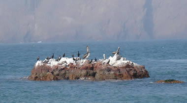

El distrito de Pisco es una ciudad del centro-sur del Perú, capital de la Provincia de Pisco
(Departamento de Ica), situada 290 km al sudeste de Lima a orillas del mar Peruano, al sur de
la desembocadura del río Pisco.
La ciudad comprende tanto el pueblo, conocido como Pisco pueblo como el puerto y el
malecón, conocidos como "Pisco playa".
Actualmente cuenta con actividad industrial desmotadora de algodón y algunas otras industrias
relacionadas con la harina y aceite de pescado, textiles, chocolates, guano de las islas,
etc. Fue creado en 1821.
Atractivos turísticos
- reserva nacional de paracas.
La Reserva Nacional de Paracas está ubicada 250 km. al sur de Lima y a 3 horas aproximadas en auto, se extiende sobre 335.000 hectáreas. Su propósito es proteger y cuidar las especies y animales, -sobre todo las que están en vías de extinción- que viven en este ecosistema marino, La Reserva Nacional de Paracas es la única area protegida de este tipo en el Perú. Desde el puerto de Paracas se puede emprender excursiones en bote a las Islas Ballestas donde se ven muy de cerca lobos marinos, pingüinos de Humboldt, flamencos o parihuanas y aves marinas. También se puede visitar algunas playas, acantilados y bahías. Por su accesibilidad, la gran concentración de fauna marina y la belleza de sus paisajes, la Reserva Nacional de Paracas es uno de los destinos más visitados por los limeños sobre todo en los fines de semana largos. La reserva Nacional de Paracas ofrece excelentes condiciones de profundidad para realizar buceo y pesca, windsurfing, ski acuático y campamentos. Es un excelente lugar para practicar el avistamiento de aves por la gran cantidad de especies que viven o están en transito
las islas ballestas son unas islas que están en el oceono pacifico, próximas a la costa del peru .
las islas Se encuentran 260 km al sur de Lima, en las cercanías de la ciudad de Paracas en la provincia de Pisco.En las ciudades de Paracas y Pisco se puede comprar boletas para hacer un tour de las Islas Ballestas en lancha. El costo normal al escribir es de S/.40 por persona. El paseo es de 2 horas – 30 minutos par llegar, 30 minutos para regresar, y una hora para ver los animales y aves.
No se permite el desembarco de los turistas en éstas islas, para no molestar a los animales que allí viven, pero las lanchas se acercan lo suficiente para que puedan disfrutar de la belleza de estos animales.
Situado en el Valle de Pisco y a media hora de la ciudad homónima,
Tambo Colorado es considerado el mejor conjunto urbano-administrativo inca del Perú. Está en la provincia de pisco, ica en las inmediaciones del pueblo de humay. Fue edificado en la época del inca pachacutec con la finalidad de albergar a soldados y altos dignatarios. La arquitectura y el trazado típico inca se mantienen con una única particularidad: la construcción es de adobe y muestra la adaptabilidad de los andinos al nuevo ambiente costeño durante su expansión.
Está dividido en dos sectores. El primero es el más importante, pues está constituido por un gran edificio con forma depiramede erigido en las laderas de un cerro. Con aproximadamente 100 metros de frente y 150 de profundidad, tiene un solo acceso organizado en torno a una plaza trapezoidal rodeada por cerca de 30 recintos. Se presume que era el palacio del gobernante y que en la cima, desde donde se puede apreciar gran parte del fértil valle el mandatario dirigía las festividades incaicas.
islas ballestas centro turístico de pisco-ica
https://youtu.be/qq9vYrDzzhQ